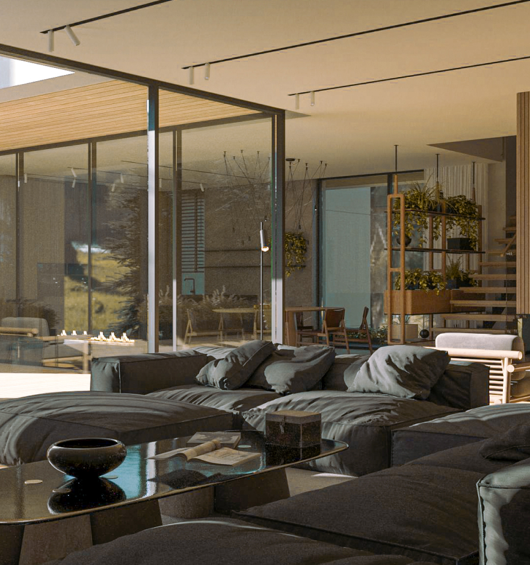

Главная
О посёлке
Компания freeDom Haus более 17 лет строит и обслуживает посёлки премиум-класса. Комплексная застройка земельного массива по авторскому архитектурному проекту Руслана Васякина, учитывающему рельеф, ориентацию домов по сторонам света и их взаимное расположение на участках – основное преимущество наших посёлков.
Сегодня мы предлагаем те архитектурные и ландшафтные решения, которые станут завтра трендом в премиальном загородном строительстве.
